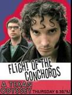

Fun fact #1 !
Did you know?
Jemaine Clement, a native New Zealand actor, director, and writer, has been nominated for 19 Emmy Awards and has won New Zealand’s highest award for comedy, the Billy T-Award
Jemaine also voiced one of the minions in Despicable Me!
This is the cover of Jemaine Clement and Bret McKenzie's documentary based off their hit show, Flight of the Conchords
Click here for the next fun fact!!! text